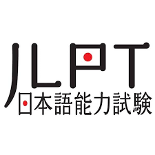

Muhammad Maulana Ahsan
Selain belajar bahasa Jepang, aku juga akan belajar bahasa pemrograman.
| Experience | Year |
|---|---|
| SEO Specialist | 2016 - 2020 |
| Facebook Advertiser | 2020 - 2021 |
| Japanese Content Creator | 2020 - Now |
What I Do
Meskipun aku lulusan RPL, tapi awal karirku diawali di dunia digital marketing, yaitu di bidang SEO dan FB Ads. Karena satu dan lain hal, aku berhenti bekerja di dunia digital marketing dan memutuskan untuk jadi konten kreator bahasa Jepang.

Wordpress
Wordpress adalah Content Management System berbasis web yang paling banyak digunakan di dunia.
Digital Marketing
Pernah mengoptimasi website untuk SEO dan juga beriklan di platfor Facebook Ads.

Japanese
Belajar bahasa Jepang secara otodidak, dan berhasil lulus JLPT Level N3 (Intermediete).
Found Me on